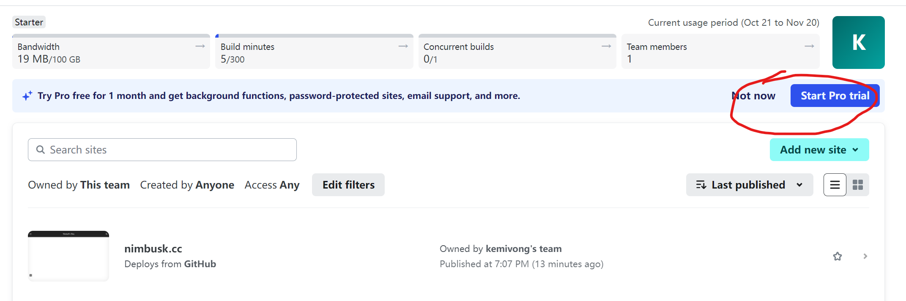
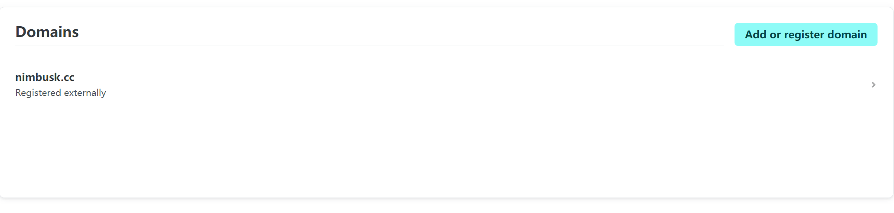

Hexo建站
背景
至于为什么要自建博客，想必你能找到这篇hexo教程，之前肯定检索过不少信息了 :) 就不过多赘述了。
准备工作
如果你没有从事过开发相关工作/没有学习过计算机编程、网络相关知识，下面提到的，建议还是花点时间了解一下，不必了解那么深。
- nodejs/npm相关语法
- hexo及hexo相关语法，这个参考官网文档相关说明即可：https://hexo.io/docs/
- git仓库/github
- 域名/域名CDN记录
- CDN加速
- HTTPS
我的目前的方案
- markdown源文章、相关配置文件，托管在 Github
- Hexo自动编译&部署相关，托管在
TravisCIGitHub Actions - 站点、站点https证书等部署相关，托管在 Netlify
这个方案目前的优点
- 编译环境不再依赖你的本地环境，你只需要关注你的文章。即便是换了电脑，你只需要把你的文章，从github上clone下来即可。
- 站点不需要你关系细节，什么HTTPS、什么证书等等
我的Hexo站点使用到的插件
1
2
3
4
5
6
7
8
9npm install hexo-theme-next --save
npm install hexo-deployer-git --save
npm install hexo-generator-feed
npm install hexo-wordcount --save
npm install hexo-abbrlink --save
npm install lozad --save
npm uninstall hexo-generator-index --save
npm install hexo-generator-index-pin-top --save
npm install hexo-algolia --save
开始建站
关于hexo语法，插件什么的，这里不再赘述，瞅瞅官网什么，再本地init一个测试blog即可，语法不是很复杂。常用的，就那么几个。
github托管源码
先上我的仓库的图：
最主要的就是：source目录下的文章
其余有几个配置文件，分别说明一下：
- .gitignore，git提交的忽略配置文件
- .travis.yml, travis的部署脚本
- config.next.yml next主题的配置文件
- config.yml 博客的主体配置文件
已经更新托管到Github Actions了
travis部署脚本
在这里贴一下，细节看我另外一篇文章
1 | language: node_js |
TravisCI
细节不再这里说明，可以看我另一篇文章中的详细说明：Hexo与TravisCI持续集成
准备
原理基本上基于放弃使用github.io托管博客静态页面，寻找第三方支持全站启用https的站点。
参考掘金网对比比较内容
Netlify
官网：https://www.netlify.com
最大的特点：支持同步Github仓库数据、免费启用Let’s Encrypt SSL证书
截止目前（2024年10月）的免费方案：
- 带宽：100GB/月
- 编译时长配额：300分钟/月
- 并发构建配合：1条（同一时间运行的上线）
作为一个自建博客，免费方案的这个流量绰绰有余。
配置大体流程
注册进入之后，点击左侧Sites选项卡，下面“Add new site”，按照步骤关联github指定仓库接口。

随后需要在左侧的Domains新增你需要关联的域名，也非常简单，跟着填就行了：

创建好之后，点击进来会看到你的dns记录，这个记录如果你要有其它使用，譬如CDN加速啥的，你可能会用到
效果
关于升级
多数升级的，基本上围绕两部分内容：
- hexo组件本身升级
- 相关hexo插件升级
本站19年建立，中间经历过一次升级，当时主要使用的两块版本是：
- hexo: 5.3.0
- hexo-theme-next: 8.11.0
本地环境升级
近日查看了一下，可以升级了，本地升级很简单，直接通过npm命令升级即可有其它的插件需要升级的类似步骤。1
2npm install hexo@7.3.0
npm install hexo-theme-next@8.21.0引用依赖升级
把博客源码根目录下的package.json文件中的相关版本号升级了
这里贴个我的：1
2
3
4
5
6
7
8
9
10
11
12
13
14
15
16
17
18
19
20
21
22
23
24
25
26
27
28
29
30
31
32
33
34{
"name": "hexo-site",
"version": "0.0.0",
"private": true,
"scripts": {
"build": "hexo generate",
"clean": "hexo clean",
"deploy": "hexo deploy",
"server": "hexo server"
},
"hexo": {
"version": "7.3.0"
},
"dependencies": {
"hexo": "^7.3.0",
"hexo-abbrlink": "^2.2.1",
"hexo-algolia": "^1.3.2",
"hexo-cli": "^4.3.2",
"hexo-deployer-git": "^3.0.0",
"hexo-generator-archive": "^1.0.0",
"hexo-generator-category": "^1.0.0",
"hexo-generator-index-pin-top": "^0.2.2",
"hexo-generator-searchdb": "^1.4.1",
"hexo-generator-tag": "^1.0.0",
"hexo-renderer-ejs": "^1.0.0",
"hexo-renderer-marked": "^3.0.0",
"hexo-renderer-stylus": "^3.0.1",
"hexo-server": "^2.0.0",
"hexo-theme-landscape": "^0.0.3",
"hexo-theme-next": "^8.21.0",
"hexo-wordcount": "^6.0.1",
"lozad": "^1.16.0"
}
}
远端升级
远程升级，由于现在都托管在GitHub Actions那里了，而且相关编译脚本中，我没有指定插件安装版本。
所以基本上不用改，唯一需要该的是nodejs版本，因为最新的hexo插件，至少需要node版本在14以上才行。苏哟i，我升级了一下。
其它的没啥了。